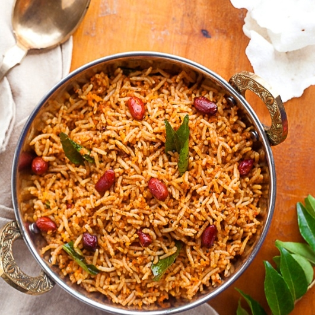

This is Jayanth Maturu. I am currently pursuing Masters in Applied Computer Science at
Northwest Missouri State University, Maryville, MO.
I am from vijayawada, Andhra Pradesh, India.I completed my schooling till secondary
education in my home town.
I am born in 2002. My hobbies are listening to music and dancing.
Puliyogare is my favourite food.It is a genuine and conventional rice-based dish made with tamarind extract and dry spices. It is made with authentic spices and with roasted gorundnuts which adds more flavour to the recipe.
